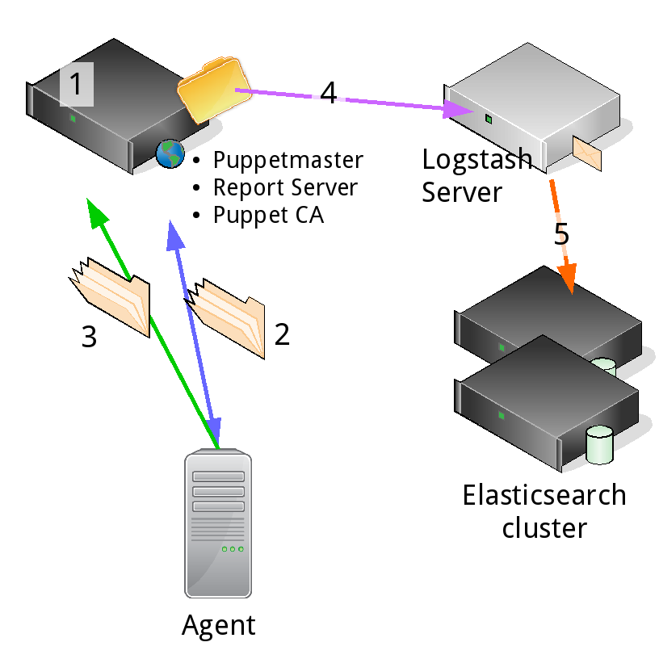

Puppet reporting
When asked for the best way to get information from an application -- whether it's performance data, usage metrics or simply status messages -- your answer should be “logging.” Indeed heavily employs logging for tracking performance of www.indeed.com and how job seekers interact with our websites. (See Logrepo: Enabling Data-Driven Decisions.)
Our puppet infrastructure is no exception. The best way to get information about puppet is from the reports. We want to use the information to answer:
- What change was recently introduced that broke puppet?
- What are the slowest resources that are on our different nodes?
- Which nodes haven't been enforcing their catalog?
- Why aren't our nodes enforcing their catalog?
- How long ago was that?
- When did it start?
- What important updates haven't they gotten?
We already send Puppet's agent log to /var/log/messages and the Puppet Dashboard. This is a good start. Syslog could be forwarded and centralized and the Puppet Dashboard makes it easy to graph and show a failed run versus a successful run. But this isn't enough to answer our questions. The reports in /var/log/messages and the Puppet Dashboard were difficult to use. It's hard to look through several runs for a specific resource or status in the Puppet Dashboard. And neither of these reports have any timing metrics that can be easily exported or used for trending and analysis. We needed an easier way to look at which resources were failing and how long different resources were taking.
The last question -- why aren’t our nodes enforcing their catalog? -- is the most important. Knowing which nodes aren't enforcing their catalog isn't necessarily as important as knowing why. This issue relates to our technical debt. How do we know what's actually broken? Every time we create a new way to do things without cleaning up the old one, our technical debt increases. It would be nice if we could remove all of our legacy code. Unfortunately, that isn't always possible. As projects get older, it becomes more and more difficult to move away from that old way of doing things. We believe that the best way to start answering these questions and reducing our technical debt is to gather all the reports into one place and start looking through them.
Implementation
Report Format
Our first task was making it possible to get the Puppet reports from our Puppetmaster. Puppet provides three ways to do this: http, log, and store. The log backend writes to a local log destination -- usually syslog. We already had that implemented but there was no way to retrieve run metrics without an excess of debug logging. After retrieving the debug logging, we would still have to parse them out. Ick. The store backend writes the report as a yaml dump in the reportdir directory, which would require scripts to harvest, parse and clean them.
The easiest way to get reports is by using the http processor, which sends a yaml dump of the Puppet::Transaction::Report object. It had all of the metrics we wanted but it didn't have specific information into failing resources except for what was in the logs. We wanted more information, but it wouldn't have been a bad start. We also would have had to write a service that accepts the report and indexes into Elasticsearch. Doing this would not have been hard, but it was extra work we didn’t want to do.
A fourth option is to roll our own reporting backend. For our infrastructure, we decided to use the puppet-logstash-reporter because it already implemented most of the features we wanted. Because it sent reports to logstash instead of Elasticsearch, we didn't need to worry about having Elasticsearch nodes close to our Puppetmaster. Plus, we were already familiar with and ran logstash in our organization. Once we made some small changes to include the configuration version we use (git hash, the Puppet environment, the Puppet server and the timestamp of the run) as well as specific failed resources, we had all the information we wanted.
Configuration
Our configuration requires adding the logstash report backend to the Puppetmaster configuration and making sure the agent sends reports to the master. We also added a logstash reporter-specific configuration file to the Puppetmaster through the puppet-logstash-reporter module.
# Puppetmaster puppet.conf
[master]
report = true
reports = logstash
pluginsync = true# Puppet agent puppet.conf
[agent]
report = true
pluginsync = true# /etc/puppet/logstash.yaml
:host: puppetreports.logstashserver.net
:port: 5603
# Added by Indeed to send failed resource statuses
:resource_status: trueWe configured logstash to accept tcp traffic on our configured port behind a load balancer to try to make sure that reports were always successfully sent and indexed into Elasticsearch. We used an F5 load balancer and a tcp half open check to make sure logstash was healthy.
# logstash.conf
input {
tcp {
add_field => ["product_group", "ops"]
codec => 'json'
mode => 'server'
port => 5603
type => 'puppet-report'
}
}
output {
if [product_group] == 'ops' {
cluster => 'elastic-ops_prod'
idle_flush_time => 5
node_name => 'node1'
protocol => 'transport'
codec => 'json'
host => ['elastic1','elastic2']
workers => 2
index => 'logstash-%{+YYYY.MM.dd}'
flush_size => 300
manage_template => false
sniffing => true
}
}In the end, our Puppet report flow went through normally. The Puppet agent received the catalog, applied it, created the report and sent the report back the master. The master processed the report via the logstash report processor and sent it to logstash. Logstash received the report and then sent it directly to Elasticsearch without further processing.

Using Kibana
Kibana things
Kibana is a visualizer on top of Elasticsearch. We use it to graph and aggregate resource times across a set of nodes or a single node. We also use it to profile puppet performance. The metrics and numbers in Elasticsearch make it easy to know which nodes are faster or slower, where our nodes are spending their time, which nodes have the most resource failures and which resources are causing the most failures.
Using Elasticsearch
At Indeed, we wanted to create a way to get at the information using Linux style tools and pipelines. Some of the tools and scripts that we created use the Elasticsearch backend directly to answer some of our questions:
- puppet-show
- puppet-blame
- puppet-disof
puppet-show
The puppet-show script queries Elasticsearch. It can show different Puppet application failures or catalog compilation failures in the environment. It can also show resources responsible for the most failures and check to make sure Puppet runs are actually running or if they're idempotent.
The way puppet-show knows whether the catalog is compiling is through this message:
Could not retrieve catalog from remote server: Error 400 on SERVER
...
This message let us know that the node was unable to get the catalog from the Puppetmaster.
[Puppet show example][puppet show example image]
puppet-blame
Puppet-blame is used to ascertain which bad commit went out to production. It requires Git, access to a git repo, being able to set the configuration version with the git revision, and the ability to compile the catalog. It uses [git bisect][git-bisect] to try to find the bad commit.
There are two ways to run puppet-blame -- interactively or automatically to check for puppet compilation failures.
The interactive method asks you to change to a git version, run Puppet, and then enter whether the result succeeds or fails. It then moves forward through the git bisect workflow until it finds the bad commit.
$> cd puppet-git
$> echo “dev-node2.dev” | python puppet-blame.py
Oldest success: f1a658 @ Jun 6th
First failure: 241b1f @ Jun 7th
Running git bisect…
Perform dry-run against this environment.
Did the run succeed (s) or fail (f)? f
Perform a dry-run against this environment.
Did the run succeed (s) or fail (f)? f
Perform a dry-run against this environment.
Did the run succeed (s) or fail (f)? s
The breaking change on dev-node2.dev was version: 6bc814 by Bad Committer
Running puppet-blame automatically uses a separate shell script to check for compilation failures, automatically compiling the catalog, and returning 0 if the compilation succeeds.
$> echo “node1.devserver.net” | python puppet-blame.py
Oldest success: 1a660b @ Sep 16th
First failure: 8408cd @ Sep 16th
Bisecting: 7 revisions left to test after this (roughly 3 steps)
[6c0cba] Some commit message
running puppet_compile.sh node1.devserver.net
Bisecting: 3 revisions left to test after this (roughly 2 steps)
[a13130] More changes here
running puppet_compile.sh node1.devserver.net
Bisecting: 1 revision left to test after this (roughly 1 step)
[f23f33] Change that broke Puppet
running puppet_compile.sh node1.devserver.net
Bisecting: 0 revisions left to test after this (roughly 0 steps)
[e63b0a] Other changes in this commit
running puppet_compile.sh node1.devserver.net
Bisecting: 0 revisions left to test after this (roughly 0 steps)
[e63b0a] Other changes in this commit
running puppet_compile.sh node1.devserver.net
f23f33 is the first bad commit
commit f23f33
Author: Bad Committer <bc@devserver.com>
Date: Fri Sep 18 11:42:29 2015 -0500
This is the change that broke Puppet
bisect run success
puppet-disof
Or: Did I Succeed Or Fail. A selection of nodes are sent through standard in and a summary of whether the runs succeeded or failed are sent back along with the logs of the failing nodes. The tool accepts three arguments:
- --verbose
- --summary: only print out the summary of the runs and no log output
- --resource:
- --only-failed: Only print the failed nodes, not the successes
Example
This example echoes the nodes into puppet-disof and returns whether they succeeded or failed.
echo -e "sfo-prod1.myserver.net" | python puppet-disof.py
==== sfo-puppet1.myserver.net failed 2015-09-20T21:24:36.000-05:00 ====
Failed Nodes:
sfo-puppet1.myserver.net:
Could not update: Execution of '/usr/bin/yum -d 0 -e 0 -y install curl' returned 1: Error: Package: libcurl-devel-7.19.7-46.el6.x86_64 (centos6)
Requires: libcurl = 7.19.7-46.el6
You could try using --skip-broken to work around the problem
You could try running: rpm -Va --nofiles --nodigest
Wrapped exception:
Execution of '/usr/bin/yum -d 0 -e 0 -y install curl' returned 1: Error: Package:
libcurl-devel-7.19.7-46.el6.x86_64 (centos6)
A more involved example is when we used Puppet to apply a patch to fix a failed Nagios check. Unfortunately, after the patch went out, some nodes were still failing their Nagios check. We used the [mcollective][mcollective-link] nrpe plugin to run the check. If the node fails the check, it will return the name of the node that failed. We can pipe those nodes to puppet-disof and try to figure out why their Puppet runs are out of compliance.
$> sudo mc-nrpe -S has_raid=true check-raid | grep myserver.net | awk ‘{ print $1 }’ | python puppet-disof.py --resource “Nrpe[check_raid]”
==== check_raid on sfo-prod1.myserver.net succeeded 2015-09-18T06:59:55.000-05:00 ====
==== check_raid on sfo-prod2.myserver.net failed 2015-09-20T12:21:51.000-05:00 ====
==== check_raid on pdx-tools1.myserver.net failed 2015-09-20T12:33:41.000-05:00 ====
==== check_raid on pdx-mongo1.myserver.net failed 2015-09-20T12:35:51.000-05:00 ====
We can see that sfo-prod1 finished successfully, but its latest run occurred before we pushed out the patch. The other three are just failing their catalog runs.
Open Source
We're working to open source all of these tools at the indeedops puppetscripts repository
We've reduced our technical debt
We've reduced our technical debt by locating nodes that aren't submitting reports. We have made it easier to track down commits that have broken Puppet. We've started alerting on nodes that are failing catalog compilation. We've started ensuring that our Puppet agents aren't violating idempotency. We're identifying why Puppet runs take so long to apply the catalog.
Improvements
- Making puppet-blame more intelligent
- Adding more use cases to puppet-show.py
- Using Puppet reporting for patch management
“When technical debt accrues, everybody loses.” - Gene Kim
references
- https://docs.puppetlabs.com/puppet/3/reference/format_report.html
- [indeedops GitHub][https://github.com/indeedops]
- https://github.com/elastic/puppet-logstash-reporter
- https://puppetlabs.com/presentations/introducing-puppet-enterprises-event-inspector
- https://docs.puppetlabs.com/pe/latest/CM_overview.html
- Puppet Reporting Book
- https://git-scm.com/docs/git-bisect
- Jordan Sissel @ PuppetConf 2012, 2013, 2014
- Gene Kim @ PuppetConf 2014